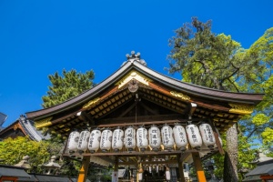

安井金比羅宮
縁切り縁結びについて
ホーム
安井金比羅宮について
縁切り縁結びについて
年中行事
ご祈祷について
参拝・境内案内
交通案内
お問い合わせ
menu
安井金比羅宮について
縁切り縁結びについて
年中行事
ご祈祷について
参拝・境内案内
交通案内
お問い合わせ
縁切り縁結びについて
高さ1.5メートル、幅3メートルの絵馬の形をした巨石で、中央の亀裂を通して神様のお力が円形の穴に注がれています。
「○○君と幸せに結婚できますように」という可愛いらしいお願い事から、「夫と浮気相手との縁を切って下さい」といった事まで、皆様の様々な願いが書かれた「形代(かたしろ)」（身代わりのおふだ）が貼られ、碑が見えないほどになっています。
御祈願の方法は、まずご本殿にご参拝下さい。次に「形代」に切りたい縁・結びたい縁などの願い事を書き、「形代」を持って願い事を念じながら碑の表から裏へ穴をくぐります。これでまず悪縁を切り、次に裏から表へくぐって良縁を結びます。そして最後に「形代」を碑に貼って下さい。
なお御本殿への御参拝、「縁切り縁結び碑」での御祈願は終日可能です。
1.まず御本殿に御参拝下さい。

2.次に「形代」（身代わりのおふだ）に願い事を書きます
形代は碑の左側の台にご用意してあります。
100円以上のお志を賽銭箱にお納めの上お取りください。
3.形代を持って、願い事を念じながら碑の表から裏へくぐる
4.同じく形代を持って願い事を念じながら碑の裏から表へくぐる
5.最後に形代を碑に貼ります
碑のどこでもお好きなところにお貼り下さい。